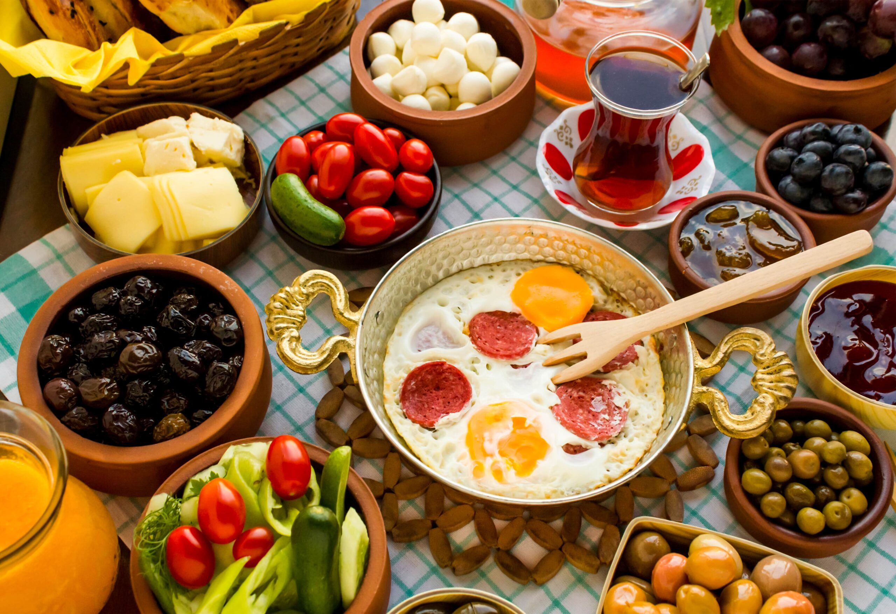
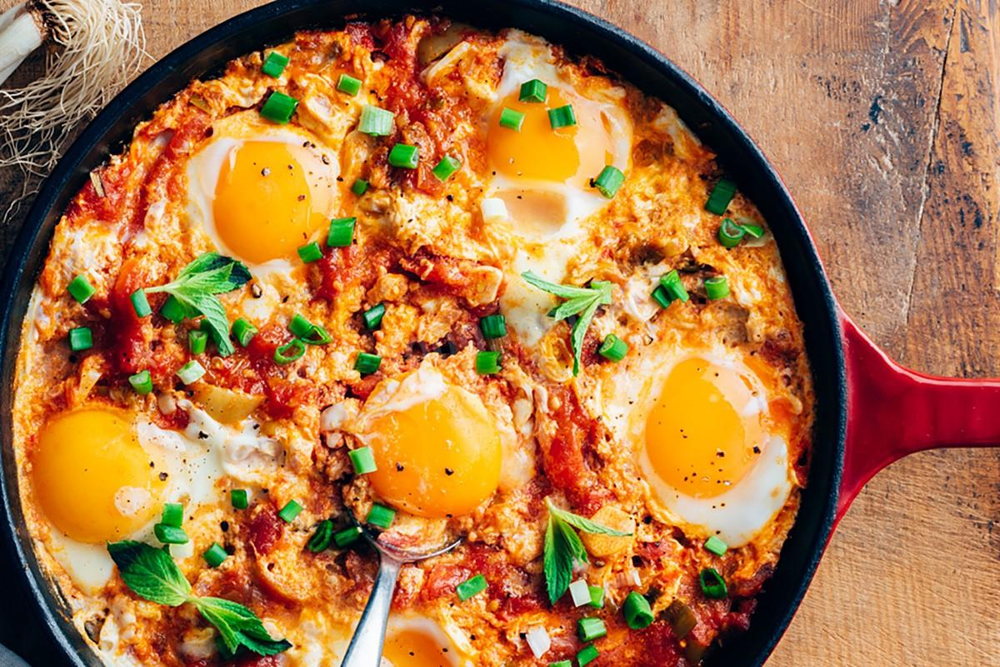
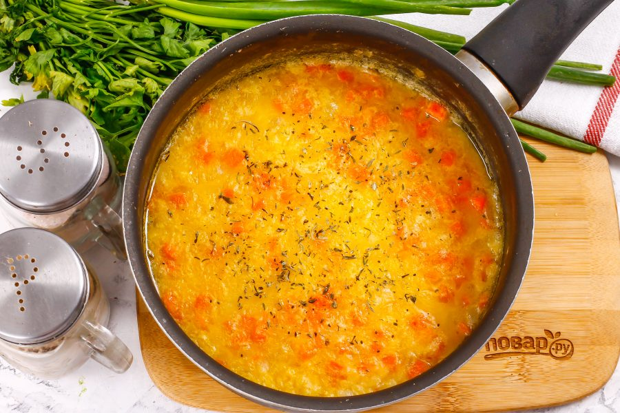
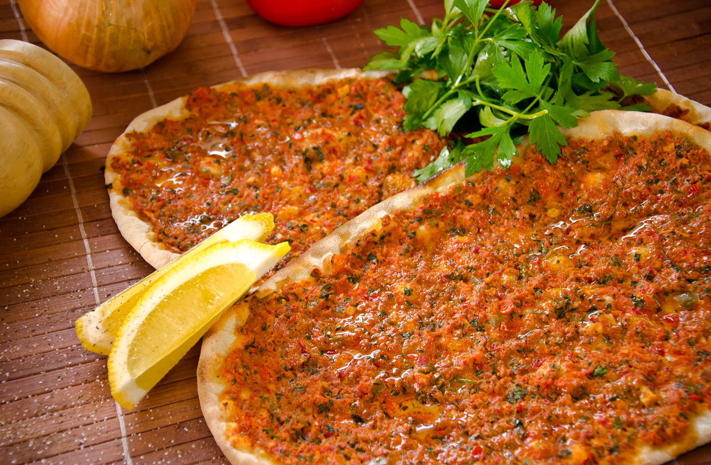
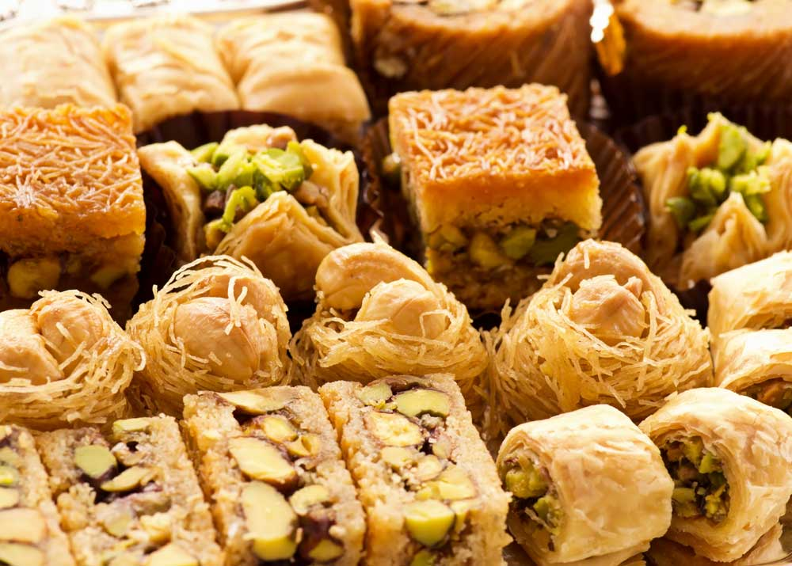

Национальная кухня Турции представляет собой своеобразный «фьюжн» востока и запада. Ингредиенты всегда свежайшие, вкусы пряные и насыщенные, а традиции приготовления и подачи еды — зрелищные и щедрые.
Еда в Турции — большая часть интересного опыта. Путешествуя по Турции, не ограничивайте себя питанием в ресторанах (особенно в отельных и/или туристических). Пробуйте уличную еду в маленьких кафешках и с продуктовых лотков.
Турецкий хлеб или тосты, масло, джем, шоколад и/или мед, оливки и маслины, сваренные вкрутую яйца, самые вкусные в мире помидоры, огурцы несколько видов сыров, и, конечно же кофе или чай. Турецкий завтрак (кахвалти) — считается одним из лучших в мире и сервируется во многих ресторанах, кафе, гостиницах и пансионах. Ограничений для кахвалти не существует, поэтому каждый хозяин привносит в эту чудесную традиции что-то свое.
Турецкий вариант яичницы на завтрак — омлет, смешанный с тушеными овощами. Очень вкусно с теплым лавашом) Менемен можно без проблем найти в меню кафешек и маленьких ресторанчиков, часто предлагается в качестве дополнения к турецкому завтраку.
Обычно турецкие супы (чорба) густые и насыщенные, на основе чечевицы или томатов. Попробуйте традиционную чорбу из чечевицы и риса (ezogelin çorbası, эзо-гелин) или просто из чечевицы (mercimek çorbası, мермесик – чорбаси), суп из курицы (tavuk suyu çorbası, тавук-сайю), рыбный суп (balık çorbası, балык чорбаси) или кисломолочный суп с мятой (Yayla çorbası, яйла чорбаси).
Лахмакун (lahmacun) и пиде (pide) — два варианта «турецкой пицы». Лахмакун — плоская хрустящая лепешка с начинкой и мяса и пряностей. Пиде — более продвинутый вариант с разного рода топингом и скрученными краями. Оба варианта довольно популярны в качестве местного фаст-фуда.
Очень сладкие, с особым очень деликатным и, в тоже время, пряным вкусом, турецкие сладости — это особый вид кулинарного искусства. Очень доступный, к тому же).
